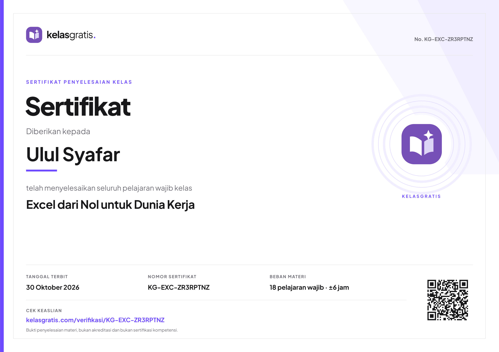
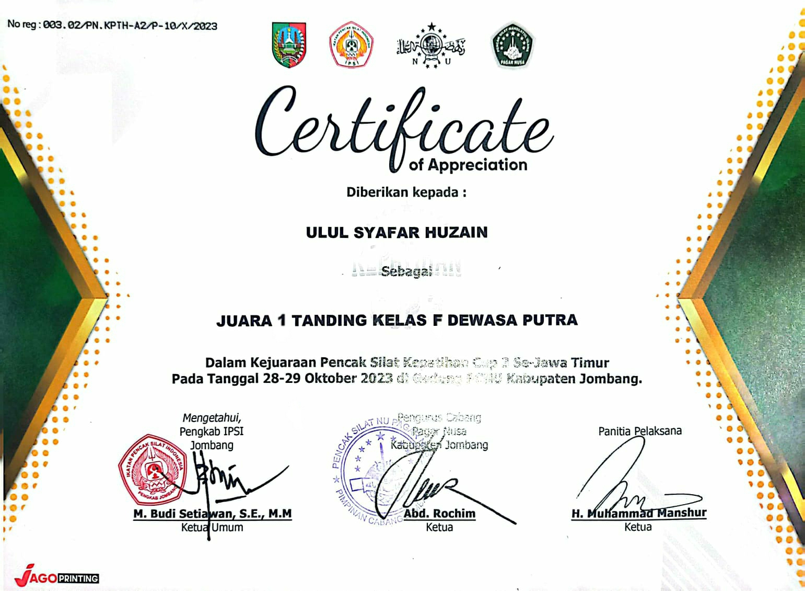
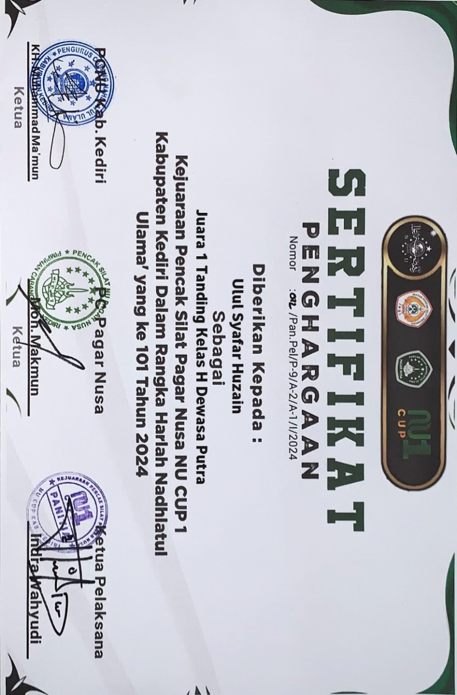

Jejak Langkah & Rekam Jejak
Pengalaman & Organisasi
Oktober – November 2024
Lamongan
Praktik Kerja Lapangan (PKL)
Komisi Pemilihan Umum (KPU) Lamongan
- Bertanggung jawab dalam pengolahan data administrasi dan rekapitulasi teknis operasional kepemiluan.
- Mendukung efisiensi alur kerja dokumen dan verifikasi data di lingkungan instansi publik secara akurat.
Juni – September 2024
Kedungpring, Lamongan
Pekerja Lepas (Freelance Crew Store)
Teh Kota Indonesia Cabang Kedungpring
- Melayani pelanggan dengan tingkat kepuasan tinggi serta mengelola transaksi kasir dan stok persediaan produk.
- Menjaga standar kualitas kebersihan store serta melatih ketelitian kerja dan manajemen waktu di lingkungan ritel yang cepat.
Juni – Juli 2024
Kedungpring, Lamongan
Petugas Pemutakhiran Data Pemilih (Pantarlih)
Komisi Pemilihan Umum (KPU) Kabupaten Lamongan
- Melakukan pencocokan dan penelitian (Coklit) data pemilih secara faktual langsung ke rumah warga sesuai prosedur operasional KPU.
- Menyusun laporan rekapitulasi data pemilih serta berkoordinasi aktif dengan PPS demi keakuratan Daftar Pemilih Tetap (DPT).
Januari – Februari 2024
Kedungpring, Lamongan
Kelompok Penyelenggara Pemungutan Suara (KPPS)
Komisi Pemilihan Umum (KPU) - Pemilu 2024
- Mengorganisir jalannya proses pemungutan dan penghitungan suara di TPS secara jujur, adil, transparan, dan kondusif.
- Melakukan verifikasi identitas pemilih, pengelolaan logistik surat suara, serta pencatatan administrasi hasil perhitungan (Formulir C-Hasil).
Dokumentasi & Portofolio Lapangan
Galeri Kegiatan
Pencapaian
Sertifikat & Lisensi

Perbesar
Kelas Gratis
Pelatihan Excel

Perbesar
UKM Pagar Nusa UNISLA
Sertifikat Kejuaraan

Perbesar
UKMPagar Nusa UNISLA
Sertifikat Kejuaraan
Kompetensi Utama
Keahlian & Kemampuan
Teknis & Perangkat Lunak
Pemrograman & Tools Pengolahan Data
Bahasa Pemrograman Python (Dasar)
Dasar / Konsep Sintaks
Microsoft Excel (Analisis Data & Formula)
Mahir / Tingkat Tinggi
MS Word & PowerPoint (Dokumentasi & Presentasi)
Mahir / Efisien
Interpersonal & Manajemen
Komunikasi & Orientasi Hasil
Public Speaking
Presentasi & ForumDigital Marketing
Promosi & KomunikasiAdaptabilitas
Lingkungan DinamisIntegritas Kerja
Jujur & Tanggung Jawab
Siap mempelajari teknologi baru dan menyesuaikan diri secara cepat untuk kebutuhan sistem perusahaan.
Mari Terhubung
Hubungi Saya